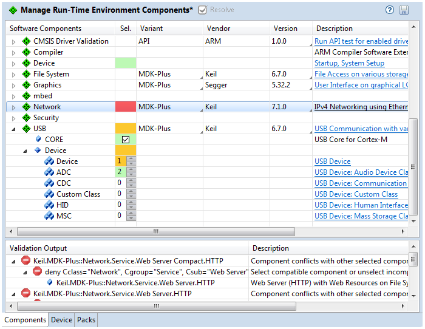
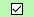
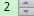
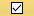

The Components tab of the RTE configuration editor provides the following functionality:

Sel. allows you to add software components. If required, specify a component using Variant or Version selections.
The Validation Output provides information about potential problems. Use the Resolve button to select other software components in case of unambiguous requirements.
The colors of selected components indicate:
|  | The Software Component has been resolved. |
|  | A Software Component allowing multiple instances has been resolved. |
|  | This Software Component is unresolved. Other components are required for correct operation and are listed in the field Validation Output. |
| The Software Component conflicts with other components or is not installed on the computer. Detailed information is listed in the field Validation Output. |
See also: